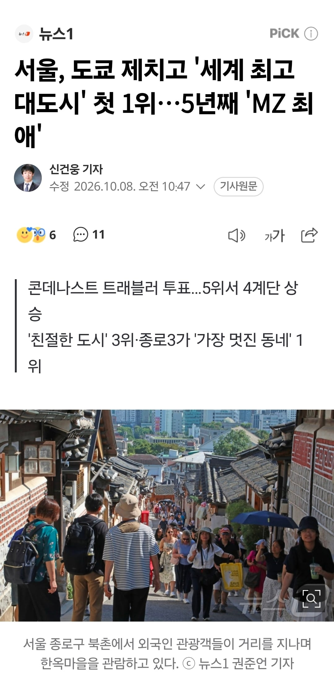
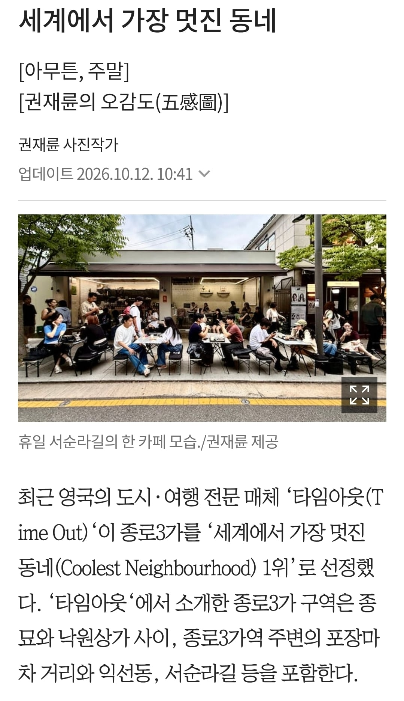

https://n.news.naver.com/article/421/0009216529?sid=102

https://www.chosun.com/national/weekend/2026/10/10/ZWATIQIYZRGLXFJO3BJ3H7MPLY/
https://n.news.naver.com/article/023/0004005486?sid=102
김구 선생님도 이미 아신다고 하네요

https://n.news.naver.com/article/421/0009216529?sid=102

https://www.chosun.com/national/weekend/2026/10/10/ZWATIQIYZRGLXFJO3BJ3H7MPLY/
https://n.news.naver.com/article/023/0004005486?sid=102
김구 선생님도 이미 아신다고 하네요
이 좋은 도시를.. 출퇴근만 하느라 즐길 새가 없네..
내가아는 서울말고 다른게 있나...?
크오오오오오오옷 주모오오오옷
그만 와...좁아...적당히만 와줘...주말에 돌아다니기 넘 빡세ㅠ
난 지방사람이라 몇년전에 종로쪽 첨갔는데
야간에 기와 돌담길 지나가는데 분위기 좋더라
유럽이랑 아시아 몇곳 해외여행 다녀왔지만 야간 분위기는 서울이 ㅈㄴ좋은거같음
bts는 군면제 두번 받아도 되는데..
저거 누가 저번에썼는데 애초에 통계낸곳이 미국 여행사이고 아시안 노선많은데 그중에 한국 노선 키우려고 한거라는 말이있음
나도 글 올리긴 했는데, 신뢰도는 판단 못해서 그냥 링크를 붙였어. 그냥 뭐 각광받고 있다~ 정도로만 느꼈음.
부산은 ㄹㅇ 감성지리긴하더라
서울도 좋고
외국인들 경주도 많이가던데
다른 지방도시들 특색도 잘 살려서 퍼졌으면 좋겠다.
몰카 그만하라고
근데 진짜 주말에 사람 조오오오오오오오오오오오오오오오오오오옺나 많더라 진짜로
부산 가니까 어디는 한국인 찾기가 어려울 정도였음
킬구
근데 서울 여행하기 진짜 좋긴 하지ㅋㅋㅋ
캐리어충들 길막좀 그만해 ㅅㅂ...
집값 더 오르겠네~~
좋은글인데 규정상 옳그떠 아니냐 ㅋㅋㅋ
브런치 먹으러갔는데 한국 손님은 나밖에 없음
일단 체감되는건 외국인이 정말 흔해졌다는거임 ㅋㅋ
김구선생님 이젠 좀 무섭습니다